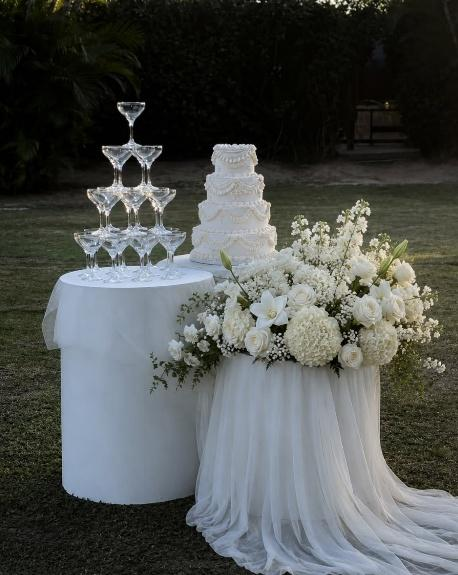
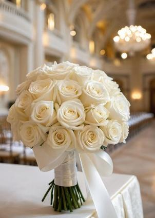
The Wedding Day — Thursday 13 May 2027
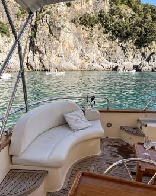
Friday 14 May 2027 — join us for a relaxed day on the water as the celebrations continue. More details to follow.
Collegiate Church of the Nativity of Our Lady — Naxxar, Malta
View Map →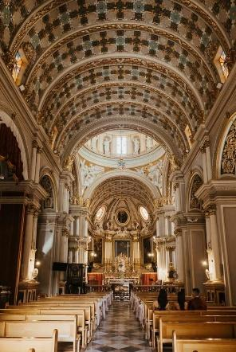
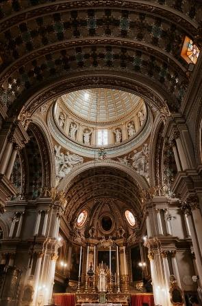
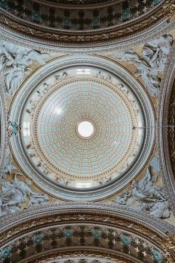
We are delighted to be celebrating our wedding at the Collegiate Church of the Nativity of Our Lady, Naxxar. Steeped in history and tradition, this magnificent Baroque church has been at the heart of the village for centuries and is one of Malta’s most iconic landmarks. Built in the early 1600s on the site of earlier churches, it is renowned for its beautiful architecture, impressive dome, intricate artwork, and stunning interior. Among its many unique features are the famous twin clocks on the façade, one of which has remained frozen at 11:45 for generations, adding a little character and local charm. We instantly fell in love with the church’s beauty, history, and atmosphere, and we couldn’t think of a more special place to celebrate the beginning of our next chapter together.
Guided through the Grand Entrance Hall — Naxxar, Malta
View Map →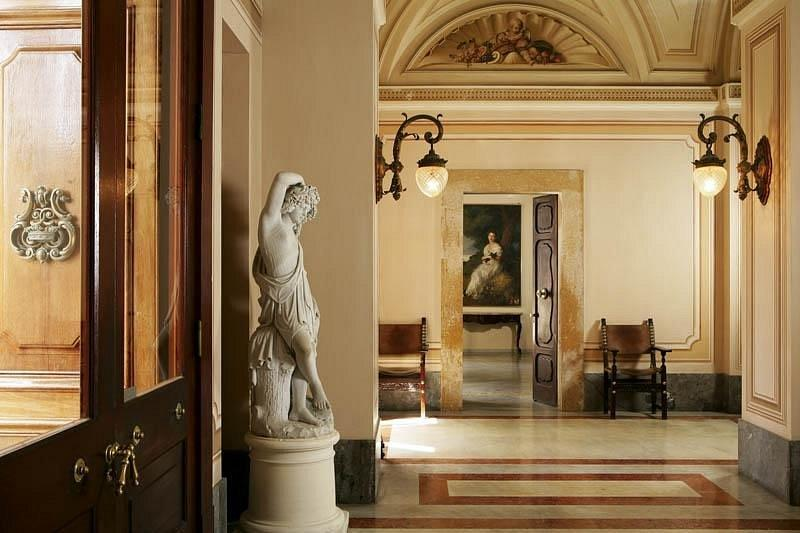
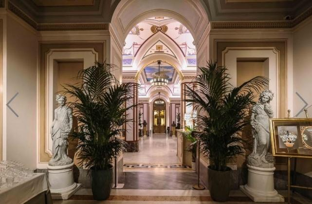
Following our ceremony, we are delighted to welcome you to Palazzo Parisio in Naxxar for our wedding reception. Often described as Malta’s “mini Versailles”, this extraordinary palace is one of the island’s most treasured landmarks. Although its origins date back to the early 1700s, the palace we see today was transformed by Marquis Giuseppe Scicluna, who purchased the property in 1898 and set out to create a magnificent family residence unlike anything else in Malta. Working with renowned Italian architects, artists and craftsmen, he filled the palace with stunning frescoes, marble staircases, gilded rooms and elegant details that remain beautifully preserved to this day. Situated directly opposite the church, Palazzo Parisio felt like the perfect setting for us to continue the celebrations with all of our family and friends.
As you step through the Palazzo’s famous bronze doors, you are greeted by a spectacular marble hall lined with statues, family portraits and ornate frescoes. This impressive entrance was designed to make a statement, offering guests a first glimpse into the grandeur and elegance of the palace. From the moment we first walked through the doors, we were captivated by the sense of history and occasion that fills every corner of the building.
Upstairs Terrace, Palazzo Parisio — Naxxar, Malta
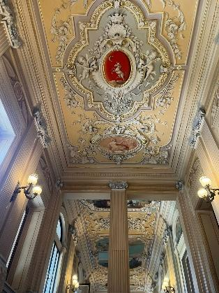
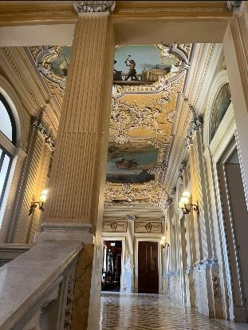
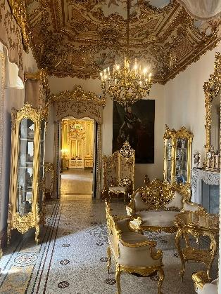
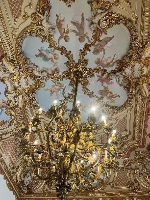
One of the most striking features of Palazzo Parisio is the magnificent marble staircase, which gracefully connects the palace’s grand interiors to the terrace overlooking the gardens. Surrounded by ornate frescoes, gilded details and an impressive collection of paintings and family portraits, this area perfectly reflects the elegance and grandeur envisioned by Marquis Giuseppe Scicluna when he transformed the Palazzo. The staircase itself is particularly remarkable, being carved from a single block of marble, a feature that is often cited as one of the largest pieces of its kind used in a private residence in Europe. From the terrace, guests can admire sweeping views of the beautiful gardens below while taking in the rich history and craftsmanship that make Palazzo Parisio so unique. It is a truly breathtaking setting and one of our favourite parts of the venue.
The Ballroom, Palazzo Parisio — Naxxar, Malta
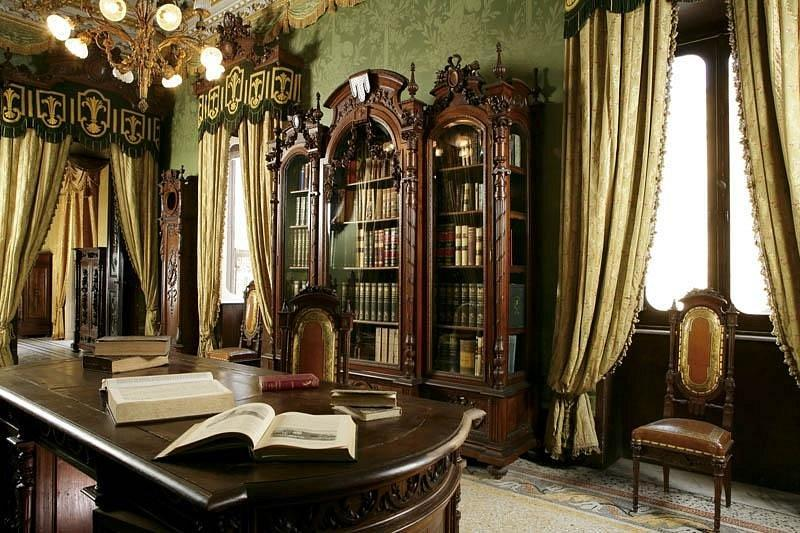
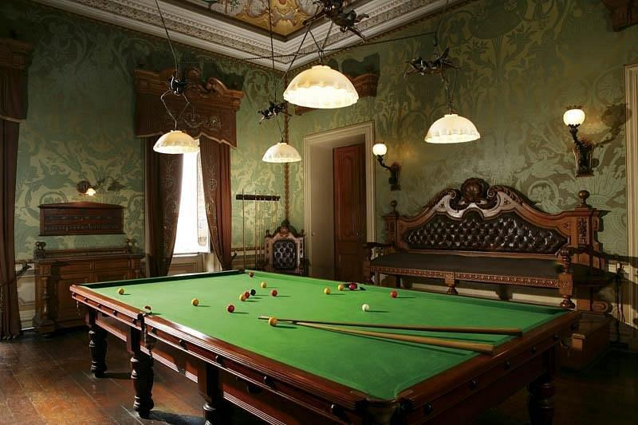
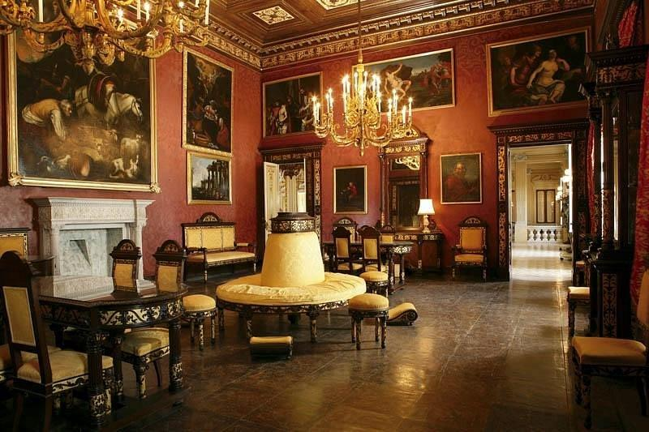
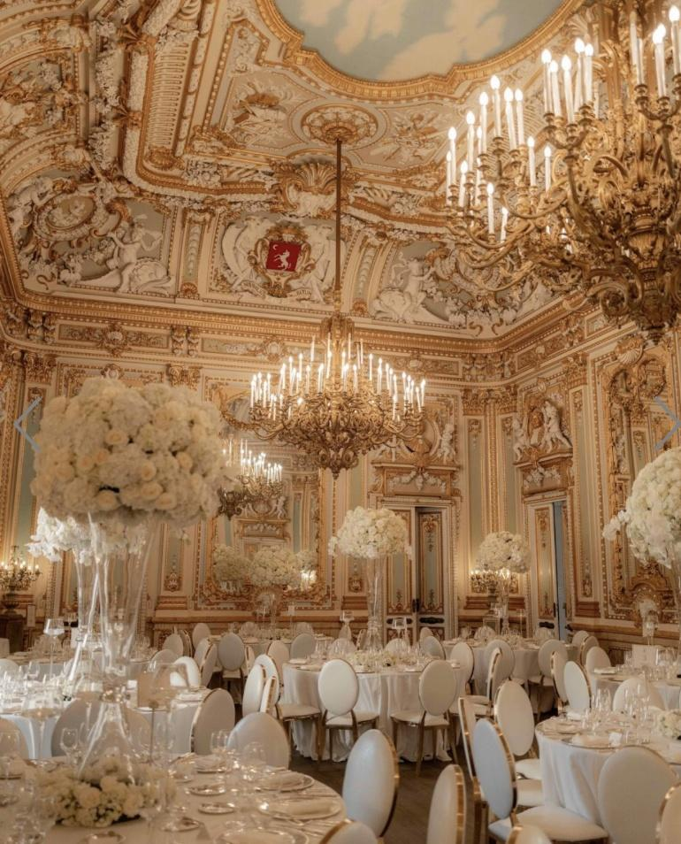
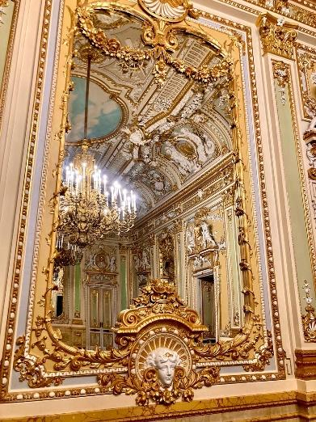
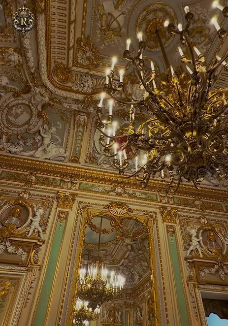
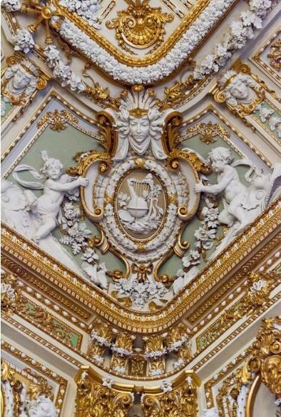
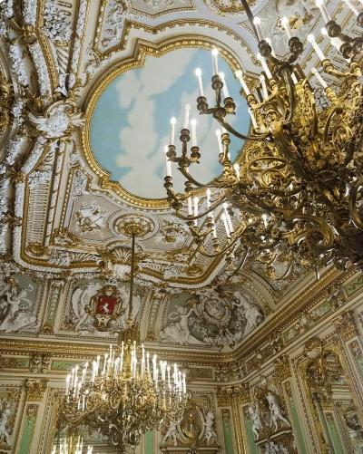
At the heart of Palazzo Parisio lies the magnificent Ballroom. Designed to rival the grand salons of Europe’s finest palaces, the room is richly decorated with gilded mirrors, ornate plasterwork, hand-painted ceilings and sparkling chandeliers that reflect light throughout the space. Every detail was carefully chosen by the Marquis and the Italian craftsmen he commissioned, creating an atmosphere of elegance and grandeur that has endured for generations. Originally intended for hosting distinguished guests and lavish family gatherings, the Ballroom continues to be a place of celebration and joy today. The moment we stepped inside, we could immediately imagine sharing such an important day with our family and friends in a setting so full of history, character and timeless romance.
The Gardens, Palazzo Parisio — Naxxar, Malta
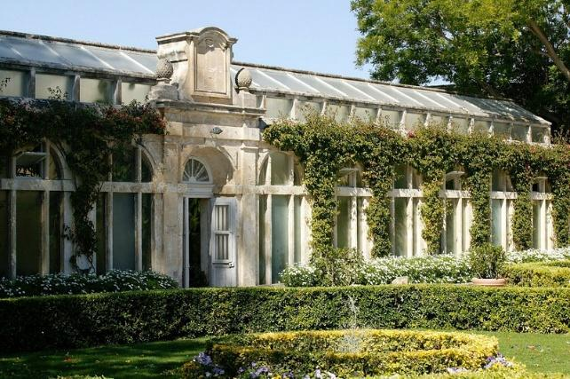
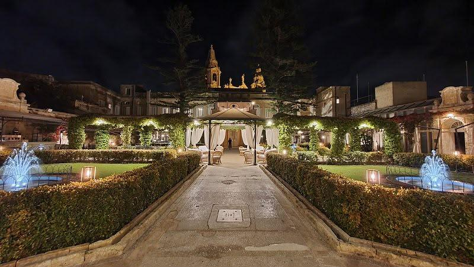
The Palazzo’s gardens are among the most beautiful private gardens in Malta and are often considered one of its hidden gems. Designed in the Italianate style, they feature elegant pathways, ornate fountains, centuries-old olive trees, vibrant bougainvillea, citrus trees and carefully manicured lawns. The gardens can trace their roots back to the 18th century and even include a historic Orangery and stone grotto. Full of colour, fragrance and charm, they provide a truly magical backdrop for our celebrations, and we cannot wait to enjoy it with you all.
The Cellar, Palazzo Parisio — Naxxar, Malta
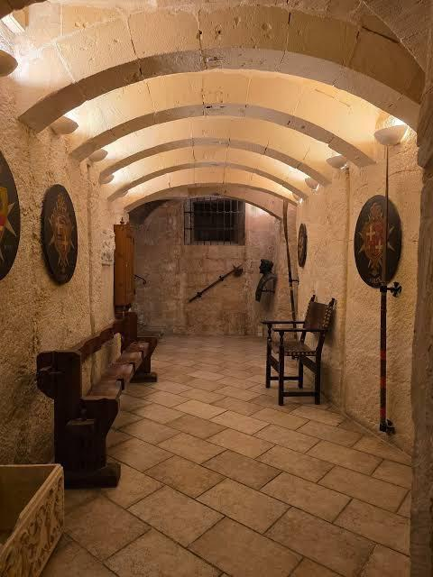
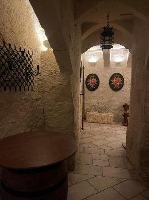
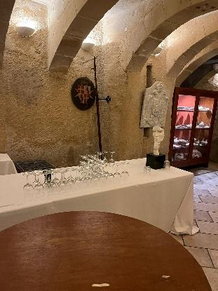
Beneath all the grandeur of the palace lies one of its most atmospheric spaces, the historic cellar. Built from traditional Maltese limestone, it offers a fascinating glimpse into the Palazzo’s past and the daily life of the families who once lived here. While guests are often captivated by the opulence above ground, the cellar serves as a reminder of the centuries of history that give Palazzo Parisio its unique character and charm. As the evening unfolds, we can’t wait to let our hair down, raise a glass, and enjoy the end of what we hope will be a fun and enjoyable day for all our guests.